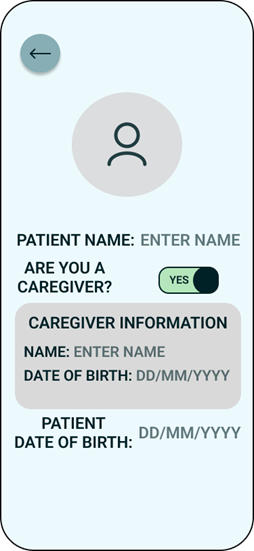
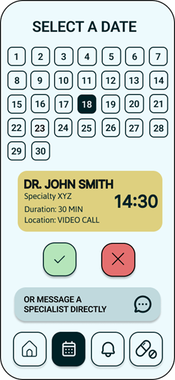
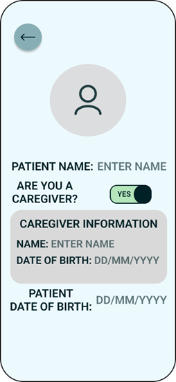
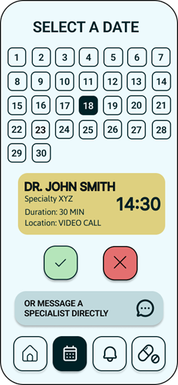

A UX Case Study on improving adherence and care coordination
Chronic health conditions require continuous management that often extends beyond the doctor’s office and into people’s daily lives. For many patients, this includes following strict medication schedules, monitoring symptoms, and regular doctor appointments. Despite the obvious importance of these routines, maintaining them can be difficult. Factors such as busy schedules, forgetfulness, complex medication regimens, unclear instructions, and limited organizational tools often lead to missed medication doses or even delayed care. In fact, some patients may also struggle to remember whether they have already taken their medication, increasing the risk of accidental double dosing or skipped treatments. These challenges not only affect individual health outcomes but also place additional strain on healthcare systems.
Caregivers also play a crucial role in supporting individuals with chronic conditions. They are often responsible for coordinating appointments, managing multiple medications, and ensuring adherence to treatment plans. This responsibility can become overwhelming and stressful. As a result, there is a clear need for solutions that support both patients and caregivers in a way that is simple, reliable, and easy to integrate into everyday routines.
One such solution is using digital tools to support health management. In fact, mobile applications have become essential for tracking habits, setting reminders, and improving behavioral consistency. While existing solutions such as Calcium Health offer advanced, data-driven approaches to medication management, they often prioritize analytics and clinical integration over everyday usability. However, these platforms can become complex and overwhelming, especially for people who are less comfortable with technology or who simply need quick, reliable support in their daily routines. Thus, this project focuses on a patient-centered approach. It emphasizes on simplicity, clarity, and accessibility for both patients and caregivers. The app is designed to seamlessly fit into users’ lives, addressing common challenges such as forgetfulness, routine management, and coordination of care. While it may not yet include advanced integrations or AI-driven insights, its strength lies in its intuitive design and its ability to support real user needs in a practical and approachable way. A strong emphasis is placed on simplicity, clarity, and trust, ensuring that users can rely on the app without feeling overwhelmed or confused.
The objective of this UX design process is to create a user-centered solution that addresses real user needs and pain points. Through methods such as user research, persona development, user journey mapping, prototyping, and usability testing, this project seeks to deeply understand user behaviors and design an experience that fits naturally into their daily lives. Special attention is given to accessibility, ease of navigation, and reducing cognitive load. Ultimately, this case study demonstrates how thoughtful and research-driven UX design can transform a complex and often stressful health management process into a more structured and supportive experience.

 


